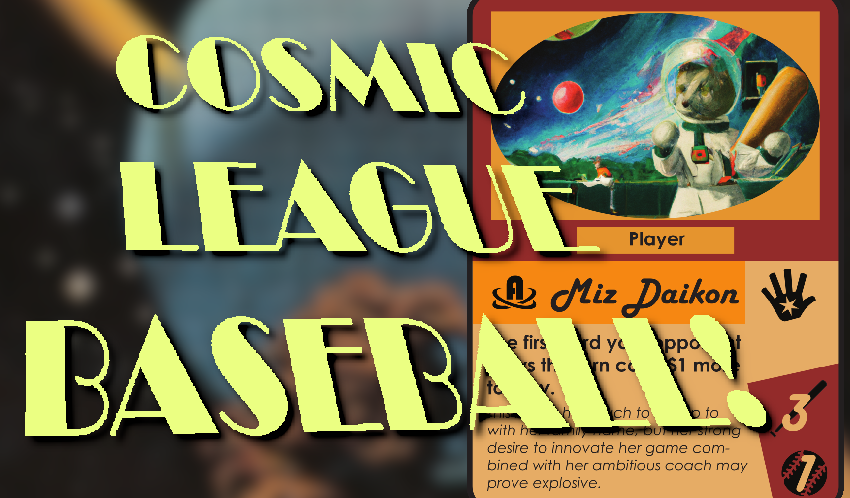
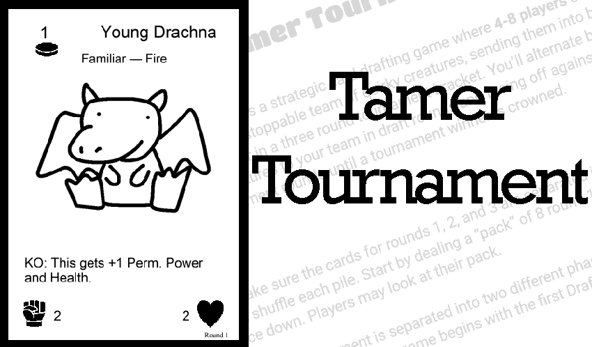
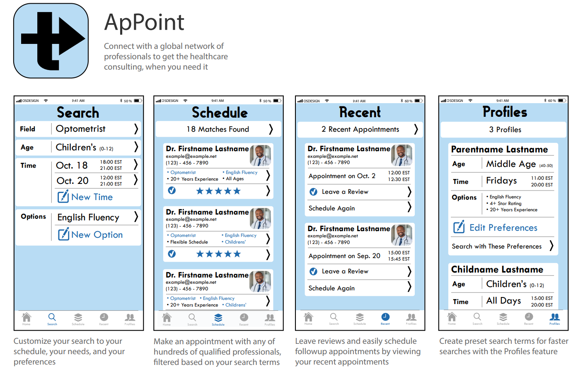

About Me
I'm a 20 year old game developer, coder, and miscellaneous thing-doer from Western Ohio.
I'm highly feedback driven, with a commitment to user experience and a passion for nitty-gritty mechanical design.
Contact and Links
Places to find me and ways to get in touch.
Original Works
Cosmic League Baseball
A competetive trading card game and worldbuilding project set in a retrofuturistic galaxy where baseball has replaced all conflict.
Read the 50 page Narrative Design Document here:
Download the print and play Rules and Cards here:
Tamer Tournament
A tabletop drafting game inspired by the Auto-Battler genre, where players assemble and train a team of creatures as part of a tournament bracket.
The game is currently in a playtesting phase, with a final goal of being pitched to a tabletop games publisher.
View the Rules here:
Download the cards as a Print and Play here.
Frogger GML Port
A port of the classic arcade game Frogger to GML. Created in collaboration with Aiden Pearson. You can play it right in your browser above!
Or, download it on Github here.
ApPoint (Graphic Design Example)
A graphic design example based on the idea of a smartphone app for scheduling online medical appointments.
Fan Works
Viridian's Last Mission and Revolution

Viridian's Last Mission is a fan-made expansion for Magic: the Gathering based on classic Spy films and supervillain troupes. It features three original mechanics, 276 original cards, full art and flavor text, and support for Draft, Sealed, and Constructed play. It's been playtested and refined for more than a year and has had collaborative input from a full community of fellow designers and playtesters.
Viridian's Last Mission is also part of the fanmade Constructed format Revolution: Custom Standard. I serve as a curator and organizer for the format, which has more than 50 active players each month. The curator team has the responsibility to organize monthly "Grand Prix" events and balance the format in response to card and deck performance.
View the full set, and the rest of Revolution in a searchable format here.
Draft the set online with custom-trained AI here.
Or view the Design Document here.
Site last updated 12/14/21